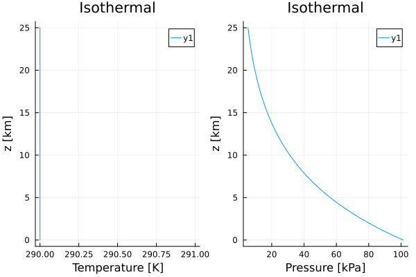
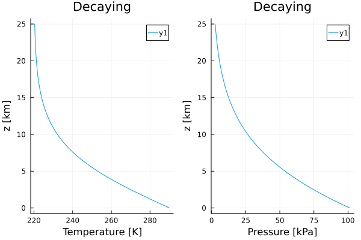
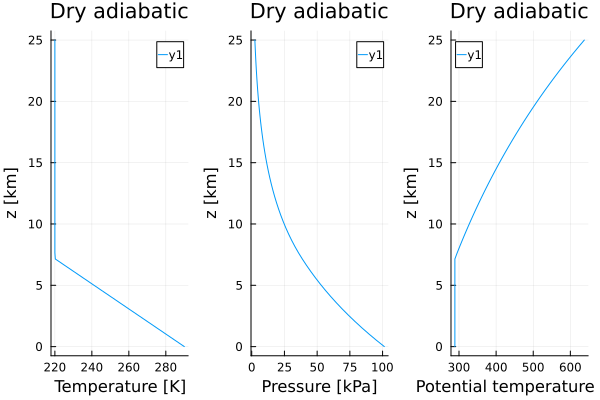

Atmospheric temperature profiles
Several temperature profiles are available in Thermodynamics.TemperatureProfiles. Here, we plot each profile.
Usage
Using a profile involves passing two arguments:
param_seta parameter set, from ClimaParams.jlzaltitude
to one of the temperature profile constructors.
IsothermalProfile
import Thermodynamics as TD
import Plots
import ClimaParams as CP
import Thermodynamics.Parameters as TP
FT = Float64
param_set = TP.ThermodynamicsParameters(FT)
z = range(FT(0), stop = FT(2.5e4), length = 50);
isothermal = TD.TemperatureProfiles.IsothermalProfile(param_set, FT);
args = isothermal.(Ref(param_set), z);
T = first.(args);
p = last.(args);
p1 = Plots.plot(T, z./10^3, xlabel="Temperature [K]");
p2 = Plots.plot(p./10^3, z./10^3, xlabel="Pressure [kPa]");
Plots.plot(p1, p2, layout=(1,2), title="Isothermal", ylabel="z [km]");
Plots.savefig("isothermal.svg");"/home/runner/work/Thermodynamics.jl/Thermodynamics.jl/docs/build/isothermal.svg"
DecayingTemperatureProfile
import Thermodynamics as TD
import Plots
import ClimaParams as CP
import Thermodynamics.Parameters as TP
FT = Float64
param_set = TP.ThermodynamicsParameters(FT)
z = range(FT(0), stop = FT(2.5e4), length = 50);
decaying = TD.TemperatureProfiles.DecayingTemperatureProfile{FT}(param_set);
args = decaying.(Ref(param_set), z);
T = first.(args);
p = last.(args);
p1 = Plots.plot(T, z./10^3, xlabel="Temperature [K]");
p2 = Plots.plot(p./10^3, z./10^3, xlabel="Pressure [kPa]");
Plots.plot(p1, p2, layout=(1,2), ylabel="z [km]", title="Decaying");
Plots.savefig("decaying.svg")"/home/runner/work/Thermodynamics.jl/Thermodynamics.jl/docs/build/decaying.svg"
DryAdiabaticProfile
import Thermodynamics as TD
import Plots
import ClimaParams as CP
import Thermodynamics.Parameters as TP
FT = Float64
param_set = TP.ThermodynamicsParameters(FT)
z = range(FT(0), stop = FT(2.5e4), length = 50);
dry_adiabatic = TD.TemperatureProfiles.DryAdiabaticProfile{FT}(param_set);
args = dry_adiabatic.(Ref(param_set), z)
T = first.(args)
p = last.(args)
θ_dry = TD.dry_pottemp_given_pressure.(Ref(param_set), T, p)
p1 = Plots.plot(T, z./10^3, xlabel="Temperature [K]");
p2 = Plots.plot(p./10^3, z./10^3, xlabel="Pressure [kPa]");
p3 = Plots.plot(θ_dry, z./10^3, xlabel="Potential temperature [K]");
Plots.plot(p1, p2, p3, layout=(1,3), ylabel="z [km]", title="Dry adiabatic")
Plots.savefig("dry_adiabatic.svg")"/home/runner/work/Thermodynamics.jl/Thermodynamics.jl/docs/build/dry_adiabatic.svg"
Extending
Additional constructors, or additional profiles can be added to this module by adding a struct, containing parameters needed to construct the profile, and a functor to call the profile with a parameter set and altitude.